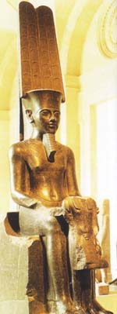

Амон ("прихований", "таємний"), в єгипетській міфології бог сонця. Священна тварина Амона - баран і гусак (обидва - символи мудрості). Бога зображували у вигляді людини (іноді з головою барана), зі скіпетром і в короні, з двома високими пір'ям і сонячним диском. Культ Амона зародився в Фівах, а потім поширився по всьому Єгипту. Дружина Амона, богиня неба Мут, і син, бог місяця Хонсу, становили разом з ним фиванскую тріаду.
У XXI столітті до нашої ери за фараонів XI династії Середнього царства культ Амона зблизився з культом бога війни Монту, одного з головних божеств-покровителів цієї династії; з піднесенням XII династії Амон витісняє Монту, набуваючи державний характер, його ототожнюють з гелиопольским богом сонця Ра (Амон-Ра-Монту), однак ім'я Амона-Ра зустрічається вже в Текстах пірамід за часів Стародавнього царства. Саме як Амон-Ра він стає общеегіпетской божеством.
Пізніше Амон придбав статус улюбленого і особливо шанованого бога фараонів, і за часів Вісімнадцятої Династії фараонів був оголошений главою єгипетських богів. Амон-Ра дарував перемоги фараона і вважався його батьком.
Амон вважався і як мудрий, всезнаючий бог, "цар всіх богів", небесний заступник, захисник пригноблених ("візир для бідних"). В епоху Нового царства склалися уявлення про Амона як про бога, що становить поряд з Птахом і Ра божественну тріаду і одночасно що є єдиним богом, втілюючи в собі всіх інших богів, в тому числі самих Птаха і Ра. Амон - бог-творець всього сущого, владика світу, в ньому невидимо існують всі боги, люди і предмети, правлячий фараон - син Амона від шлюбу з царицею-матір'ю.
У період з 1075 по 945 рік до нашої ери, коли Єгипет управлявся фиванским жрецтвом, Амон перетворився в саме шановане божество, його культ поширився далеко за межі країни, в Лівії і Куше (Нубія). Сходження на престол XXV (кушітскімі) і XXII (Лівійської) династій, завоювання Єгипту ассирийцами в 671-663 роках до нашої ери, завоювання Єгипту персами в 525-332 роках до нашої ери не похитнули позицій Амона, але центр його культу був перенесений жерцями в місто Танис , древню столицю Єгипту в дельті Нілу.